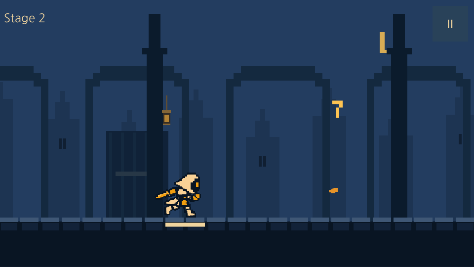
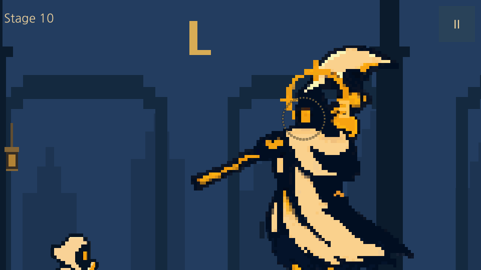
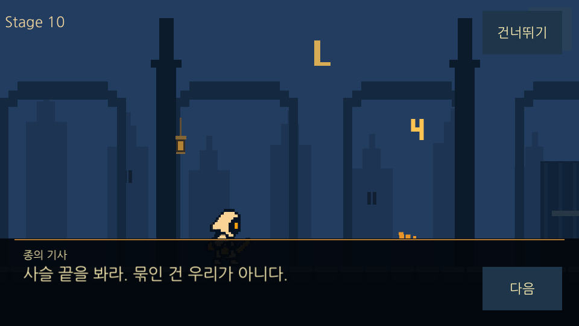
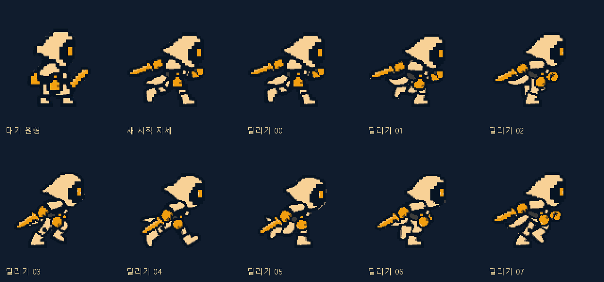
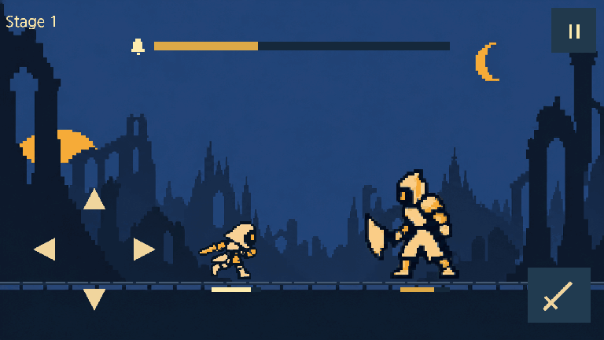
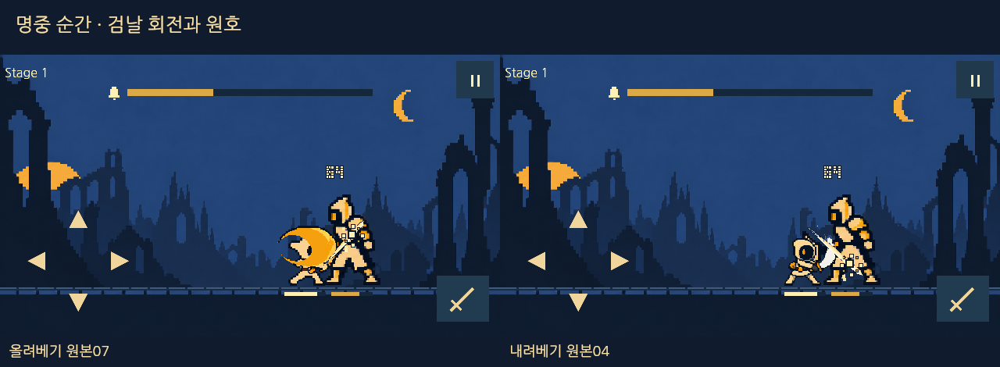

종의 기사
문은 안에서 잠겼다.
SimpleGame 검술사의 실제8프레임·16fps·500ms를 참고했습니다.
새 입력 자세에서 PixelLab로 온의 전체 몸체 동작을 생성했습니다. 온의 달리기는1.5배, 처치 후 이동 속도·거리는2배로 조정합니다.
최신 달리기·베기·v4 회피, 적 분해·1920px 이동·Stage 표시, 보스 줌과 포효,10층 하단 대사와 유물 선택을1~10층 MVP 및11층 경계에 적용했습니다. 몬스터 Idle·Stun은 아직 단일 포즈입니다.
QA: 통합 검사1회와 수정 항목 재검사 종료 · 전체 합격 보류. 최종 Windows 후보는 빌드·저장 복원·정상 종료를 확인했습니다. 간헐적 Unity 종료 오류는 미해결이며 실제 입력은 사용자 요청으로 보류했습니다. 기기 검증과 세부 미확인 항목은 QA 결과에 남겼습니다.
적용 범위 · QA 완료 기준 · 최신 QA 결과 · LastBell 전용 MCP8093



위 이미지는 가속 smoke 실행의 정지 캡처입니다. 정상 속도 동작·실제 입력·최종 합격 범위는 QA 보고서에서 구분합니다. 아래 브라우저 미리보기와 생성 원본은 기획·비교 자료로 보존합니다.
종이 멎은 뒤 밤이 끝나지 않는 마을. 작은 종지기 온은 손안의 불씨를 들고 탑에 들어선다. 다섯 종을 깨우면 아침이 돌아온다고 믿지만, 보스를 쓰러뜨릴 때마다 탑이 감춰 온 기록이 드러난다. 마지막에 해야 할 일은 새로운 누군가를 종의 연료로 바치는 것이 아니라, 빼앗긴 시간을 주인에게 돌려주는 것이다.
10층 대사 Unity 적용 ·20~50층은 후속 제작 다섯 구역의 이야기·대사·저장 규칙 전체 보기 ↗
문은 안에서 잠겼다.
사슬에 묶인 것은 마을의 내일.
보호를 명분으로 빼앗은 시간.
불씨는 연료가 아닌 돌려줄 시간.
모든 시간을 주인에게 돌려준다.
장병기를 바닥에 짚고 한쪽 무릎을 꿇는다. 후광이 갈라지고 갑옷이 네모 도트로 떨어진다. 몸이 사라진 자리에서 안쪽 빗장이 내려가고 황동 핵 하나가 잠깐 남는다.
대사는 한 번에 한 줄씩 표시하며 화면을 탭해 다음 줄로 넘깁니다. 건너뛰어도 유물 선택은 남습니다. 캐릭터별 첫 보스 처치에 자동 재생하고 반복 도전에서는 생략합니다.
다음 대사: “사슬 끝을 봐라. 묶인 건 우리가 아니다.”
온의 응답: “그럼, 무엇을 가둔 거지?”
공격 영역에서 대상을 고르고 ▶ 공격 재생을 누르세요. 새 공격마다 방향을 정하며, 슬라이더로 되돌려 볼 때는 같은 결과를 유지합니다.


검술사 이미지는 사용자 프로젝트의 동작 참고로 원형 그대로 보존했습니다. 온은 별도 입력 자세에서 전체 동작을 새로 생성했습니다. 검술사 실제8장 · 클립·컨트롤러·프레임 추적 근거





PixelLab 원본 프레임·시트 검토 · 이전 v9 보드 · 이전 v8 보드 · 이전 v7 보드 · 이전 v6 보드 · 이전 v5 접근·복귀 · 이전 v4 생성 후보 · 이전 v3 기획 모형 · 이전 v2
온은 유지하고 일반 몬스터는 높이2.0, 중간 보스3.2, 보스4.0으로 확대합니다. 같은 구도로 통합 전 크기와 이번 MVP 적용 크기를 비교하세요. 기본 체급 확대와 등장 카메라 줌은 별개입니다.
| 캐릭터 | 통합 전 → 적용 | 온 대비 | 1280×720 높이 |
|---|
대기 기준 온 발(500,590), 적 발(900,590). 공격 접근 지점은 일반 적x780, 수문장x690, 종의 기사x680입니다. 모자·후광·무기를 포함한 대기 그림의 전체높이 기준이며, 포즈마다 크기를 다시 맞추지 않습니다. 체급·표시 위치 변경만으로 피해량·회피 판정·무적을 추가하지 않습니다.
새 적과 조우한 뒤 Stage 도트 조립·표시500ms → 고정된 큰 줌 → 얼굴 원형 파동과 공격 동작1회 → 줌아웃 순서입니다. 공격 동작은 피해·투사체·공격 예고를 만들지 않는 표시용 클립으로 제작합니다. 비전투 상체 클로즈업에서는 보스 다리와 온 일부가 화면 밖으로 나갈 수 있습니다. 전투 구도로 완전히 돌아온 뒤에만 첫 공격 예고를 시작합니다.
Stage0.50 → 줌인0.40 → 1.45배 유지·포효0.75 → 줌아웃0.45 → 정착0.20초.
재조우1.50초에도 Stage0.50초와 최대 줌은 같습니다. 준비·정점 포효 포즈와 낮은 문·종·호흡 계열 음원을 제작합니다.
Stage0.50 → 줌인0.50 → 1.60배 유지·포효1.00 → 줌아웃0.50 → 정착0.20초.
재조우1.70초에도 Stage0.50초와 큰 줌 유지. 포효 후반부터 잔향을 줄여 첫 공격 신호가 묻히지 않게 합니다.
몬스터의 준비 동작에 지면 균열·착탄점·무기 끝의 빛을 맞추는 기획입니다. 큰 화살은 오른쪽 위 화면 밖에서 마지막180ms에 사선으로 내려옵니다. 아래 시안에서 공격 공간과 시간 관계를 확인하고, 각 방향의 준비→발동→회수 연결은 생성 프레임으로 별도 검토합니다.
예고가 끝나는 순간을0ms로 둡니다. 회피를 사용할 수 있는 상태에서 정확히0ms에 올바른 방향으로 누르면 완벽 회피입니다. Unity는100% 완료 상태를 한 프레임 표시하고 다음 프레임 입력을 같은0ms에서 받아 피해보다 먼저 처리하도록 수정했습니다. 아래는 판정 규칙 시안이며 실제 터치 지연 측정은 아닙니다. 입력·판정 경계 확인 기록
| 방향 | 몬스터 준비 | 예고 → 타격 | 대응 |
|---|
가시는 좌상향으로 최대120px 솟고, 성공 점프의 발은144px까지 올리는 기획입니다. 타격 시점 이후 성공 포즈를 짧게 보정하고 잔해는140ms 안에 사라집니다. 무적160ms·완벽60ms 판정은 그대로이며, 정확한 경계 프레임은 실제 모션 연결 후 검증합니다.
낮은 공격은 바닥에 힘을 주고, 후방 공격은 하늘을 부르는 준비 동작이 필요합니다. 미생성 방향은 대기 참고 프레임으로만 표시합니다. 생성된 공격 후보도 무기 형태·몸의 연결·명중 자세를 검토한 뒤 각 패턴에 연결합니다.
일반 적은x500→780, 수문장은x690, 종의 기사는x680까지 접근한 뒤x500으로 복귀합니다. 실제 상향·하향 베기와 기준 궤적의−7°/0°/+7°를 조합한6가지 중 직전과 다른 조합을 선택합니다. 명중은200ms에 한 번이며, 몬스터마다 맞는 몸통 접점과 피격 프레임을 사용합니다.
▶ 공격 재생으로 새 공격을 시작할 때 직전과 다른 방향·각도 조합을 한 번 정합니다. 멈춤·스크럽·대상 변경·치명 체크에서는 다시 추첨하지 않습니다.
0~120ms 접근 → 120~200ms 베기 준비 → 200~300ms 휘두름·회수 → 300~460ms 복귀입니다. 사선 참격은175~425ms의250ms 동안 한 번 재생하며,200ms 실제 명중에만 몬스터 피격·파편·피해 숫자가 나옵니다. 상향·하향과 각도가 달라도 피해 횟수와 전투 시간은 같습니다.


몸동작과 외부 참격의 방향을 함께 맞춥니다. 내장 검흔과 외부 효과가 두 번의 공격으로 보이지 않게 연결하고, 같은 결과를 스크럽으로 확인합니다.
명중 순간 캐릭터 전체가45ms 하얗게 변한 뒤120ms에 원래 색으로 돌아옵니다. 투명한 곳·배경·HUD는 유지합니다. 기존180ms 피격 자세는 적 공격을 취소하거나 종 게이지·기절 시간을 바꾸지 않습니다. 공격 준비·발동을 가릴 때는 그 자세를 유지하고 섬광·파편을 겹칩니다.
SimpleGame 검술사의 실제 Move8장·16fps·500ms를 동작 참고로 삼았습니다. 온은 별도 입력 자세에서 PixelLab MiniMax 전체 몸체 시퀀스를 생성한 hero-v10-blademage-run 후보입니다. 반환9장 중00~07을 선택하며00은 입력 반환 프레임이고08은 같은 달리기 위상으로 돌아오는 끝 프레임이라 제외합니다. 선택8자세를24fps·약333.33ms 주기로 재생합니다. 검술사 참고 원본의16fps·500ms는 유지합니다. v9의 고정 몸통·관절 방식은 반려 자료로 남깁니다. 회피는 v4 네 원본, 베기는 v6 상향·하향, 몬스터5종 피격은 기존 후보를 유지합니다. 선택 클립은 Unity MVP에 연결했으며 생성·적용 사실과 출시 품질 승인은 구분합니다.
각 방향의 준비·접점·회수를 실제 프레임으로 연결했습니다. 입력 참고 프레임과 생성 수량을 구분하고,200ms 접점에 맞춰 재생 순서를 선별했습니다.
각 몬스터의 몸 반동을 새로 제작했습니다. 생성 원본은 보존하고 9셀을 선별해180ms 동안 한 번 반응하게 했습니다. 장수는 경직·기절 시간이 아닙니다.
검토기는 온의 선택8자세·24fps·약333.33ms를 기본으로 표시하고, 반환원본9장은 별도 항목으로 보존합니다. 시트별 실제 프레임 수·제작 방식·검토 상태를 구분합니다. FPS는 시각 재생 기준이며 게임 판정 검증값이 아닙니다. v7 피격·전환·회피 계약 · 질주 참고·이전 아트 검토 · 유지하는 v6 베기·피격 아트 · 검토기 넓게 열기 ↗
캐릭터별 필수 상태와 예정 시간을 확인하는 보조 화면입니다. 생성 클립이 없는 상태는 대기 참고 프레임으로 표시하며, 실제 연결 프레임 제작이 필요합니다. 채택 여부와 원본 품질은 위 검토기에서 확인합니다.
| 상태 | 목표 프레임 | 표현 시간 | 현재 자산·다음 제작 |
|---|
담·린과 전체50종의 상태 매핑은 제작 목록에 포함합니다. 목록의 목표 프레임 수는 제작 완료 수량이 아닙니다.
검술사 Move 원본8장·16fps·500ms는 참고로 보존합니다. 온의 선택8자세는1.5배인24fps·약333.33ms 주기로 재생합니다. 처치 후 이동은2초 동안 화면x500을 고정하고 바닥·다음 적을1920px 왼쪽으로 움직입니다. 이동 속도·거리를 각각2배로 높여960px/s이며 다음 적은x2820→900으로 진입합니다. 공격의 접근·복귀(일반 적500→780→500, 보스는 체급별 접근점)와 처치 후 전진은 별개입니다.
| 레이어 | 바닥 대비 속도 | 1920px 이동 시 | 역할 |
|---|
새 hero-v10-blademage-run의 전체 몸체·팔·다리 연결과 접지·루프를 검토 중입니다. 정지 프레임과 합성 자료의 확인을 브라우저 실시간 재생 검수로 간주하지 않습니다. 달리기는1000/3ms(약333.33ms) 주기이며 이동은1920px/2000ms입니다. 레이어의 최대 이동량은 하늘38.4px·원경153.6px·중경422.4px·가까운 기둥921.6px·바닥1920px입니다. 공격·회피·피격·보스 카메라·Stage 표시 시간은 그대로입니다. 선택 클립의 Unity 적용 결과는 상단의 통합·QA 기록을 따릅니다. 현재 직교2D를 유지하고 하늘·원경·중경·가까운 기둥·바닥을 분리합니다. MVP에는 별도로 제작한5개 도트 배경 레이어와 반복 바닥을 저장 프리팹으로 연결했습니다. 첨부 분위기 이미지 전체를 복원한 것은 아닙니다.
근거: Unity Learn · 카메라와 자동 패럴랙스 · Unity6000.3 · 직교와 원근 · 적용 방식·픽셀 안정성 검토
Unity MVP에는 Kenney CC0 효과4개와 직접 합성한8개 음원을 연결했습니다. 일반 전투·보스·등불 로비 음악을 전환하며 일시정지와 소리 끄기를 지원합니다.
| 용도 | 실제 적용 파일 | 출처·처리 |
|---|---|---|
| 베기·발소리 | knifeSlice.ogg · footstep03.ogg | Kenney RPG Audio · CC0 |
| 명중·가시 | hit.ogg · spike.ogg | Kenney Impact Sounds · CC0, 원본 파일명·해시는 매니페스트에 보존 |
| 일반 전투·보스·등불 로비 BGM | battle-bells.wav · boss-bells.wav · lobby-bells.wav | 이번 프로젝트에서 직접 합성한 루프3개 |
| 치명타·완벽 회피·등불·포효 | critical-bell.wav · perfect-dodge.wav · lantern-ignite.wav · mini-roar.wav · boss-roar.wav | 직접 합성한 효과5개. 보스 확대 중 포효, 명중 시 효과 재생 |
실제 사용12파일·해시·라이선스 · 크레딧 · 예전 음원 후보 목록. 후보였던 Incompetech 곡은 이번 빌드에 사용하지 않았습니다.
중간 보스·보스 음원을 각각 합성해 연결했습니다. 확대 상태에서 얼굴 주위 원형 파동3회와 공격 동작1회를 함께 표시합니다.
실제 오디오 출력과 mute 후 무음·복귀를 확인했습니다. 전곡 청음·모든 타격의 싱크·기기별 출력 검수까지 완료한 것은 아닙니다. 세부 결과는 QA 기록을 따릅니다.
검술사 원본을 참고한 온의 새 전체 몸체8프레임 후보를 검토합니다. PixelLab 반환9장 중00~07의8자세를24fps·약333.33ms로 재생합니다. 이동 속도·거리는2배인960px/s·1920px, 이동 시간은2초를 유지합니다. v9의 고정 몸통·관절 방식은 반려 자료로 보존합니다. Stage 도트 조립·전체 백색 피격과 v4 회피 복원은 유지합니다. 기존 v6 베기와 몬스터5종 피격을 유지합니다. 방향 선택은 공격 시작에 한 번, 명중도200ms에 한 번입니다. 후보별 반려·수정 필요·검토 상태를 구분하며, 생성·합성 완료를 최종 품질 승인으로 간주하지 않습니다. 선택 모션·배경·10층 스토리를 Unity MVP에 연결했습니다. 회피 완료 프레임과 막타·피해 숫자도 유지합니다. 통합 QA는 한 차례 수행하고 발견한 결함의 영향 범위만 재검사합니다. 최신 검사 수와 미해결 항목은 상단 QA 결과에서 확인하며, 실제 입력은 사용자 요청으로 보류했습니다.
10·20·30·40·50층 보스는 처치·보상·유물 후보를 먼저 저장하고, 쓰러짐·분해 뒤 하단 대사로 숨겨진 진실을 공개합니다. 대사 뒤 유물3택1을 저장하고 다음 층으로 이어집니다.50층은 유물 선택 뒤 해당 캐릭터 최초 완주에6초 엔딩을 재생하고 로비로 연결합니다. 같은 캐릭터의 이후 완주는 정산 뒤 로비로 돌아가며, 중간 보스는 기본 골드·종 파편1개만 지급하고 유물 선택 없이 자동 진행합니다. 구역별 서사와 다시보기 기준에서 전체 내용을 확인합니다. v1의 저장·보상 중복 방지·체크포인트 계약을 유지합니다. 보스 포효·줌아웃은 예고650/900/250ms를 소모하지 않습니다. 플레이어 명중200ms와 재공격500ms를 Core에 적용했습니다. 생성 프레임 수·시각 FPS가 피해 횟수나 회피 판정을 만들지 않습니다. 이번 Unity 적용은1~10층과11층 경계이며20~50층 서사·엔딩은 후속 제작 범위입니다.